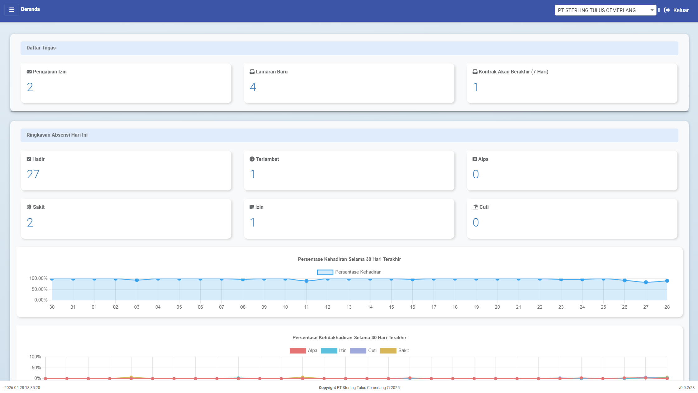
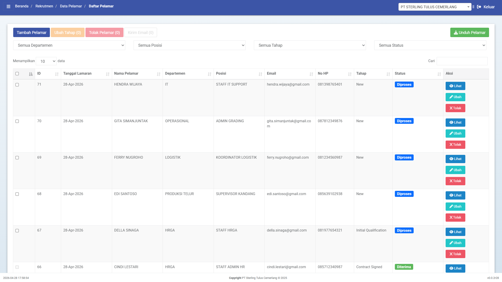

Perusahaan peternakan farm memiliki operasional yang kompleks dengan karyawan tersebar di kandang, grading, gudang pakan, logistik, maintenance, hingga office. Aktivitas berjalan setiap hari dan membutuhkan koordinasi tenaga kerja yang konsisten di berbagai lokasi.
Aktivitas seperti shift kandang, feeding, biosecurity, hingga pengambilan telur berjalan setiap hari dan sangat bergantung pada kedisiplinan serta kehadiran tenaga kerja di lapangan.
Proses sortir, grading, packing, dan dispatch membutuhkan koordinasi tenaga kerja yang tepat waktu untuk menjaga kualitas dan target produksi tetap tercapai.
Pengelolaan absensi, cuti, lembur, hingga payroll membutuhkan data yang akurat dari berbagai lokasi, termasuk perhitungan komponen seperti BPJS dan PPh 21 yang kompleks dan harus sesuai regulasi.
Pengelolaan HR di perusahaan dengan banyak karyawan dan lokasi operasional sering menghadapi berbagai kendala yang mempengaruhi kecepatan, akurasi, dan kontrol data.
iREAPNET menggabungkan seluruh proses HR dari pelamar hingga payroll dalam satu sistem terpusat yang mudah digunakan, tetap terhubung dengan SAP, dan dirancang untuk operasional multi lokasi dan multi perusahaan.
Mengelola karyawan dari berbagai perusahaan atau unit dalam satu portal dengan pemisahan data yang jelas namun tetap terkonsolidasi untuk kebutuhan HR dan payroll.
Data pelamar, proses seleksi, hingga status rekrutmen dikelola dalam satu sistem sehingga tidak lagi tersebar di berbagai file atau komunikasi..
Kehadiran karyawan dapat dicatat melalui berbagai metode seperti fingerprint, NFC, mesin absensi, dan mobile, sehingga mendukung kebutuhan operasional di office maupun lapangan dengan data yang lebih akurat dan real-time.
Perhitungan gaji mencakup lembur, tunjangan, BPJS, dan PPh 21 dalam satu sistem yang lebih terstruktur dan mengurangi ketergantungan pada Excel.
Pengajuan cuti, izin, dan kebutuhan HR lainnya memiliki alur yang terdokumentasi dengan baik sehingga mengurangi potensi kesalahan dan dispute.
Data tetap terintegrasi dengan SAP sebagai sumber utama, termasuk data operasional seperti produksi, penjualan, dan aktivitas bisnis lainnya yang digunakan untuk perhitungan gaji, komisi, dan bonus, tanpa mengharuskan HR bekerja langsung di dalam SAP.
Lihat bagaimana iREAPNET digunakan dalam proses HR sehari-hari, mulai dari rekrutmen, absensi, self service, payroll, approval, hingga reporting manajemen.
Kelola data pelamar, proses seleksi, hasil interview, dan online test dalam satu sistem.

iREAPNET menyediakan fungsi lengkap untuk mengelola proses HR dari pelamar hingga payroll dalam satu sistem yang terintegrasi dan siap digunakan dalam operasional sehari-hari.
Pipeline kandidat untuk pekerja kandang, grading, gudang, driver, security, maintenance, admin, dan supervisor.
Mempercepat seleksi dan membuat penilaian kandidat lebih terdokumentasi.
Single source of truth untuk seluruh data karyawan group.
Kontrol kehadiran harian dari berbagai metode absensi.
Mengelola pengajuan dan approval cuti/izin agar tidak menjadi dispute payroll.
Kalkulasi payroll otomatis dari data karyawan dan absensi.
Memberi akses mandiri ke karyawan untuk kebutuhan HR tertentu.
Kontrol akses dan approval sesuai struktur organisasi.
Seluruh proses HR berjalan dalam satu alur yang terhubung, mulai dari rekrutmen hingga payroll, tanpa proses manual yang terpisah.
iREAPNET membantu mengubah proses HR dari manual dan tersebar menjadi sistem yang lebih cepat, terkontrol, dan siap digunakan untuk kebutuhan operasional dan keputusan bisnis.
| Area | Kondisi Manual | Dengan iREAPNET | Business Value |
|---|---|---|---|
| Absensi | Data kehadiran sering terlambat dan tidak akurat | Absensi tercatat otomatis dari berbagai metode. | Kontrol disiplin |
| Multi-Company | Data antar unit sulit dipisah dan dikontrol | User memilih company/unit sesuai akses. | Group control |
| Payroll | Perhitungan manual rawan kesalahan | Kalkulasi berbasis data karyawan dan absensi. | Akurasi gaji |
| Rekrutmen | Proses rekrutmen tidak terpusat. | Pipeline rekrutmen dan online test terdokumentasi. | Hiring cepat |
| Self Service | Banyak proses masih manual dan bergantung HR | Karyawan bisa mengajukan cuti dan izin. | Efisiensi HR |
| Reporting | Data tidak siap untuk kebutuhan manajemen | Dashboard HR dan payroll cost tersedia. | Data-driven decision |
Diskusikan kebutuhan operasional farm Anda bersama tim STEM untuk menentukan solusi yang sesuai dengan proses bisnis dan skala operasional Anda.